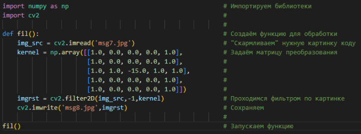

Матрицы свёртки. Что такое и с чем это едят?
Матрицы свёртки - это...
В обработке изображений ядро, матрица свертки или маска - это небольшая матрица, используемая для размытия, повышения резкости,
тиснения, определения краев и многого другого. Это достигается путем свертки между ядром и изображением. Или, проще говоря, когда каждый
пиксель на выходном изображении является функцией соседних пикселей (включая его самого) на входном изображении, ядром является эта функция.
Свёртка с python
Скажу сразу, здесь не будет гайдов.
Просто код и пояснения.
Не более того.
Пример простейшего кода

оригинал
Стоит уточнить, что матрицы(они же ядра),
могут быть любого размера.
Вот несколько примеров приобразования:
Пример №1
[0.0, -1.0, 0.0]
[-1.0, 4.0, -1.0]
[0.0, -1.0, 0.0]
Пример №2
[0.0, -1.0, 0.0]
[-1.0, 5.0, -1.0]
[0.0, -1.0, 0.0]
Пример №3
[-1.0, 0.0, 1.0]
[-1.0, 0.0, 1.0]
[-1.0, 0.0, 1.0]
Пример №4
[-1.0, 0.0, 0.0]
[0.0, 0.0, 0.0]
[0.0, 0.0, 1.0]
Пример №5
[1.0, 0.0, 1.0]
[0.0, 1.0, 0.0]
[1.0, 0.0, 1.0]
Пример №6
[1.0, 1.0, 1.0]
[1.0, 1.0, 1.0]
[1.0, 1.0, 1.0]
Полезные ссылки: